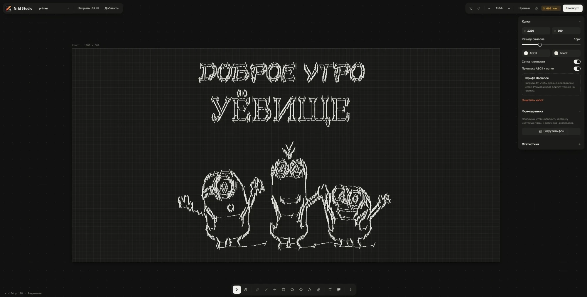

Твоя сетка героев Dota 2.
Grid Studio — сайт, на котором вы можете создать свою сетку героев, используя встроенные инструменты и своё воображение.

Проект на GitHub
shttps.github.io/GridPainter
Grid Studio — сайт, на котором вы можете создать свою сетку героев, используя встроенные инструменты и своё воображение.

Сетки, которые выложили игроки. Открой любую в редакторе и доработай под себя.